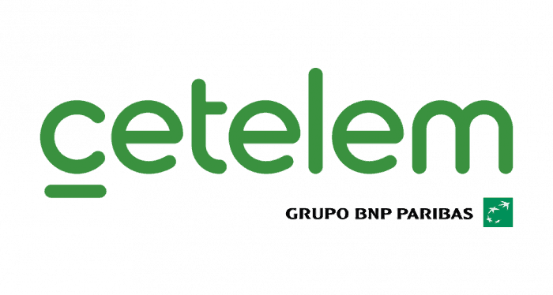

Experiencia laboral
Departamentos de Endesa (Servinform S.A.)
Departamento: Bono Social
Cargo: Auxiliar administrativo
Períodos: (septiembre 2020 - octubre 2020) (diciembre 2020 - enero 2021)
(Julio 2021 - Agosto 2021)
Funciones desempeñadas
- Tramitación de solicitudes de Bono Social
- Atención telefónica
- Requerimiento de documentación
- Comprobación de requisitos para ser beneficiario
Softwares:
- Salesforce
- Microsoft Excel
- Microsoft Word

Departamento: Facturación enelx
Cargo: Auxiliar administrativo
Período: (Septiembre 2021 - octubre 2021)
Funciones desempeñadas
- Anulación, refacturación y emisión de facturas de productos no énergéticos
Softwares:
- Zuora
- Salesforce
- Microsoft Excel
Departamento: Tarifa única
Cargo: Auxiliar administrativo
Períodos: (junio 2021 - julio 2021) (noviembre 2021 - Mayo 2022)
Funciones desempeñadas
- Tramitación de solicitudes para la contratación de Tarifa única
- Revisión de requisitos
- Atención telefónica
- Volcado de información a base de datos
Softwares:
- Salesforce
- Microsoft Excel
- Microsoft Access
- Microsoft Word
- Digital Site
Ayuntamiento de Sevilla
Centro: Hogar Virgen de los Reyes de Sevilla
Cargo: Administrativo
Período: (Abril 2017 - Octubre 2017)
Funciones desempeñadas:
- Registro de solicitudes
- Emisión y recepción de llamadas y atención al público
- Reserva de citas y espacios
- Requerimiento de documentación
- Clasificación de expedientes administrativos
- Resoluciones y notificaciones a entidades sociales
Softwares:
- Microsoft Word
- Microsoft Excel
- Programa corporativo del Ayuntamiento (Bitácora)

Centro: Laboratorio Municipal de Sevilla
Cargo: Administrativo
Período: (Diciembre 2014 - abril 2015)
Funciones desempeñadas:
- Clasificación y catalogación de material bibliográfico e historico.
Softwares:
- Microsoft Word
- Microsoft Excel
- Microsoft Access
Departamentos de Gestoría (Servinform S.A.)

Departamento: cotejo y validación de prestamos bancarios "Cetelem"
Cargo: Auxiliar administrativo
Período: (Mayo 2022 - Actualmente)
Funciones desempeñadas
- Cotejo y validación de documentación para la concesión de prestamos bancarios
- Recepción de llamadas
- Revisión de documentación
Softwares:
- WAC
- Microsoft Excel
- Microsoft Word